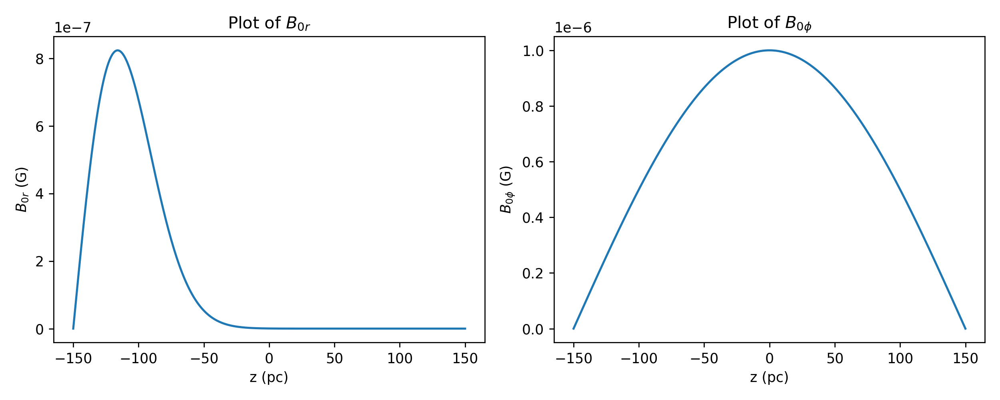

Galactic Dynamo
Solving the Mean-Field Galactic Dynamo Equation along the z-axis
Dyanamo action has been widely accepted as the primary reason for the generation and maintenance of magnetic fields in celestial bodies ranging from planets to galaxies. This project aims to solve the mean-field induction equation for the case of a galactic dynamo to find the variation of magnetic field along the z-axis with time. Initially we take the first order smoothing approximation and omit the magnetic induction term to solve the mean-field induction equation for two different boundary conditions. Later we consider the omega effect term for \(\partial \bar{B_\phi}/\partial t\) equation and \(\alpha\) effect term for \(\partial \bar{B_r}/\partial t\). Finally we compare the results when half the grid is used to the case where the full grid is used
Introduction
Dynamo action is the process by which magnetic fields of celestial bodies are generated through electromagnetic induction associated with the motion of conducting fluids. It has been a subject of extensive study in astrophysics. Differential rotation in galactic discs, creates a powerful shear along the radial direction, known as the \(\omega\)-effect. This shear facilitates the stretching of radial magnetic field lines in the azimuthal direction.Turbulent motions at smaller scales, give rise to cyclonic flows and generate poloidal magnetic fields, a phenomenon referred to as the \(\alpha\)-effect. Combining these two large-scale and small-scale effects, gives us \(\alpha\)–\(\omega\) type of dynamo, which can be used account for the generation of galactic magnetic fields. This dynamo could be simulated by using the mean field induction equation in magnetohydrodynamics(MHD).In this project the mean field equation is numerically solved with certain approximations to find the variation of magnetic field along the z direction of a galaxy.
Part 1
Methods
In a galaxy the exolution of the magnetic field can be described by the mean field induction equation which can be written as:
$$\frac{\partial \bar{B}}{\partial t}=\nabla \times (\bar{V}\times\bar{B}+\epsilon -\eta\nabla\times\bar{B})$$
Taking the first order smoothing approximation we can write \(\epsilon=\alpha\bar{B}-\eta_t\nabla\times\bar{B}\)
$$\frac{\partial \bar{B}}{\partial t}=\nabla \times (\bar{V}\times\bar{B}+\alpha\bar{B} -(\eta_t+\eta)\nabla\times\bar{B})$$
If we ignore the magnetic induction term and the alpha term the equation can be writen as:
$$\frac{\partial \bar{B}}{\partial t}=-\nabla \times \beta\nabla \times \bar{B}$$
where \(\beta=\eta_t+\eta\).
If we assume beta to be independent of position we can write:
$$\beta\nabla \times \nabla \times \bar{B}=\beta\left[\nabla(\nabla\cdot \bar{B})-\nabla^2 \bar{B}\right]$$
Using the solenoidality condition \(\nabla\cdot B=0\) we get
$$\frac{\partial \bar{B}}{\partial t}=\beta\nabla^2 \bar{B}$$
Writing the above equation componenet wise in cylindrical coordinates we get:
$$ \frac{\partial \bar{B}_r}{\partial t}=\beta\frac{1}{r^2}\frac{\partial}{\partial \phi ^2}\left(\bar{B}_r\right)-\frac{2}{r^2}\frac{\partial \bar{B}_\phi}{\partial \phi}+\beta \frac{\partial^2 \bar{B}_r}{\partial z^2}+\beta \frac{\partial}{\partial r}\left[\frac{1}{r} \frac{\partial}{\partial r}\left(r \bar{B}_r\right)\right],$$
$$ \frac{\partial \bar{B}_\phi}{\partial t}=\beta\frac{1}{r^2}\frac{\partial}{\partial \phi ^2}\left(\bar{B}_\phi\right)+\frac{2}{r^2}\frac{\partial \bar{B}_\phi}{\partial \phi}+\beta \frac{\partial^2 \bar{B}_\phi}{\partial z^2}+\beta \frac{\partial}{\partial r}\left[\frac{1}{r} \frac{\partial}{\partial r}\left(r \bar{B}_\phi\right)\right],$$
$$\frac{\partial \bar{B}_z}{\partial t}=\beta\frac{1}{r^2}\frac{\partial}{\partial \phi ^2}\left(\bar{B}_z\right)+\beta \frac{\partial^2 \bar{B}_z}{\partial z^2}+\beta \frac{\partial}{\partial r}\left[\frac{1}{r} \frac{\partial}{\partial r}\left(r \bar{B}_z\right)\right],$$
Assuming \(\bar{B}\) to be axisymmetric (all terms with \(\frac{\partial}{\partial\phi}\) are taken to be zero)
Given my project was to solve for variation of B along z I will also be neglecting all \(\frac{\partial}{\partial r}\) which gives us the following two equations
$$\frac{\partial \bar{B}_r}{\partial t}=\beta\frac{\partial^2 \bar{B}_r}{\partial z^2},\qquad \frac{\partial \bar{B}_\phi}{\partial t}=\beta\frac{\partial^2 \bar{B}_\phi}{\partial z^2}$$
The magnetic diffusion coefficient \(\beta\) is given by,
$$\beta\approx \frac{1}{3}\tau v_{rms}^2$$
where typical values of faraday time and velocity for a galaxy are \(\tau\approx 10Myr\), \(v_{rms}\approx 10km/s\) which when substituted in the above equation gives a typical value for \(\beta=34 pc^2/Myr\)
Total Magnetic field magnitude and pitch angle
\(\bar{B}_{total}\) is the vector sum of the \(\bar{B}_{r}\) and \(\bar{B}_{phi}\) components and is given by \(\bar{B}_{total}=\sqrt{\bar{B}_r^2+\bar{B}_\phi^2}\) we would be finding the variation of \(\bar{B}_{total}\) with time
We will also define pitch angle which is defined as \(P_b=tan^{-1}\left(\frac{\bar{B}_r}{\bar{B}_\phi}\right)\)
Magnetic decay constant
The total magnetic field can be represented by the following equation
$$\bar{B}_{total}(z,t)=\bar{B}(z)exp(\gamma t)$$
where \(\bar{B}(z)\) represents all the variation of magnetic field spatially and \(\gamma\) represents the magnetic decay constant which we will be calculating
Numerical Integration
To numerically solve this equation I will be using the Crank Nickolson method which is a combination of explicit and implicit meathods with which has the advantage of being unconditionally stable with with an error of \(\mathcal{O}(k^2)+\mathcal{O}(h^2)\) where k and h are the time step and spatial step size respectively.
Crank-Nicolson Method uses the average of both previous and present time-step to numerically solve the problem. The discretized form of the diffusion equation is as follows.
$$ \frac{B^{j+1}_{i} - B^{j}_{i}}{dt} = \dfrac{\beta}{2} \: \left( \dfrac{B^{j+1}_{i+1} - 2B^{j+1}_{i} + B^{j+1}_{i-1}}{dz^2} \right) + \dfrac{\beta}{2} \: \left( \dfrac{B^{j}_{i+1} - 2B^{j}_{i} + B^{j}_{i-1}}{dz^2} \right) $$
where present time-step is represented by \((j+1)\) and the past time-step \((j)\) and \((i)\) denoted the spatial index of a particular grid point. Rearranging we get
$$ B^{j+1}_{i} - \dfrac{\beta \: dt}{2 \: dz^2} \: \left( B^{j+1}_{i+1} - 2B^{j+1}_{i} + B^{j+1}_{i-1} \right) = B^{j}_{i} + \dfrac{\beta \: dt}{2 \: dz^2} \: \left( B^{j}_{i+1} - 2B^{j}_{i} + B^{j}_{i-1} \right) $$
The above equation can be written in matrix form to be,
$$ PB^{j+1} = QB^{j} $$
where \(P\) and \(Q\) are matrices of the form,
$$ P=\left[\begin{array}{ccccc}1+2 \sigma & -\sigma & 0 & \cdots & 0 \\ -\sigma & 1+2 \sigma & -\sigma & \ddots & \vdots \\ 0 & -\sigma & 1+2 \sigma & \ddots & 0 \\ \vdots & \ddots & \ddots & \ddots & -\sigma \\ 0 & \cdots & 0 & -\sigma & 1+2 \sigma\end{array}\right] \qquad \qquad Q=\left[\begin{array}{ccccc}1-2 \sigma & \sigma & 0 & \cdots & 0 \\ \sigma & 1-2 \sigma & \sigma & \ddots & \vdots \\ 0 & \sigma & 1-2 \sigma & \ddots & 0 \\ \vdots & \ddots & \ddots & \ddots & \sigma \\ 0 & \cdots & 0 & \sigma & 1-2 \sigma\end{array}\right] $$
where \(\sigma=\dfrac{\beta \: dt}{2 \: dz^2}\)
\(B^{j+1}\) can be obtained by multiplying the matrix equation throughout with \(M^{-1}\) with resulting equation being
$$B^{j+1} = P^{-1}QB^{j} $$
The simulation grid is taken to be from -150 pc to 150 pc resembling the thickness of milky way galaxy disk which is around 1000 light years or 300pc with step size \(dz=0.1\)
The temporal grid range is taken according to the seed field magnitude such that there are 100 steps within the temporal range
Results
Case:1
\(\beta=34pc^2/Myr\)
Seed Field:
Case:2
\(\beta=34pc^2/Myr\)
Seed Field:

Variation of \(B_{total}\) with time